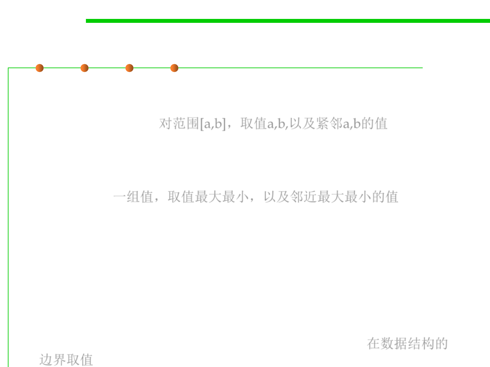

7.5 Testing and Test-First Programming
Guidelines for Boundary Value Analysis
▪ 1. If an input condition specifies a range bounded by values a and b,
test cases should be designed with values a and b and just above and
just below a and b. 对范围[a,b]，取值a,b,以及紧邻a,b的值
▪ 2. If an input condition specifies a number of values, test cases
should be developed that exercise the minimum and maximum
numbers. Values just above and below minimum and maximum are
also tested. 一组值，取值最大最小，以及邻近最大最小的值
▪ 3. Apply guidelines 1 and 2 to output conditions. For example,
assume that a temperature versus pressure table is required as
output from an engineering analysis program. Test cases should be
designed to create an output report that produces the maximum (and
minimum) allowable number of table entries.
▪ 4. If internal program data structures have prescribed boundaries
(e.g., a table has a defined limit of 100 entries), be certain to design a
test case to exercise the data structure at its boundary. 在数据结构的
边界取值